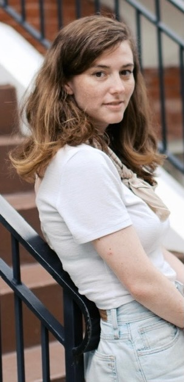

I'm a PhD candidate in Linguistics at the University of Maryland, where I'm advised by Drs. Jeff Lidz and Colin Phillips.
My main area of interest is the acquisition, representation, and processing of syntactic structure, which I study with a combination of formal, behavioral, computational, and corpus analytic methods.
Currently I'm spending most of my time working on the first language acquisition of constructional homonyms that have (or appear to have) three arguments, such as ditransitives, benefactives, and possessor datives, across multiple languages.
Other ongoing projects are in the areas of syntactic category acquisition, sentence production, formal analysis of possessor raising, and differences in processing between autistic and nonautistic conversation participants.
My email address is, totally coincidentally, easy to glean from what I work on: the acquisition of double object datives, i.e., adods@umd.edu.
Background
Before coming to Maryland, I got an MS in Computational Linguistics from the University of Washington's Computational Linguistics Masters program, where I was advised by Dr. Emily M. Bender. For my thesis, I wrote an algorithm to automatically infer morphosyntactic strategies for the marking of adnominal possession across languages.
My undergrad degree is a BS in Symbolic Systems from Stanford, where I was advised by Dr. Michael C. Frank and wrote an honors thesis on the effect of referential gaze on first language word learning mechanisms.
I also spent several years as a program manager at Microsoft, where I worked on the Word spelling and grammar checker (among other things) and spearheaded responsible AI efforts.
Output
2026 talk at Berkeley SLUgS (presented by A. Bhatnagar):
The acquisition of double object datives in Spanish. Bhatnagar, A., Dods, A., & Lidz, J.
2026 poster at HSP: Representing constructional homonyms:
Evidence from LMs and children's input. Dods, A.
2024 paper in CoNLL: Generalizations across filler-gap dependencies in neural language models. Howitt, K., Nair, S., Dods, A., & Hopkins, R.
2024 talk at BUCLD (presented by K. Howitt): LMs are not good proxies for human language learners. Nair, S., Howitt, K., Dods, A., & Hopkins, R.
2024 poster at HSP: Is the octopus regenerating?: Comparing timing effects in sentence recall and picture description tasks. Dods, A., MacDonald, A., Turk, U., Mancha, S., & Phillips, C.
2024 invited talk at Boğaziçi University Compec Colloquium on NLP and GenAI (presented by A. Dods): Using language models to study language acquisition: (What) can they tell us about filler-gap dependencies? (reporting on work with K. Howitt, S. Nair, & R. Hopkins)
2024 talk at Berkeley SLUgS (presented by S. Bendaña): The role of semantic information in the acquisition of syntactic categories.